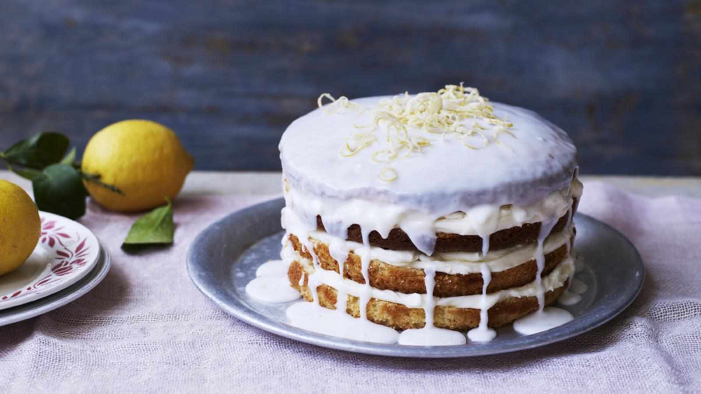

Lemon Drizzle Cake

Description
My dad was always very proud of his London roots and so as a tribute to him, I’ve made this cake in homage to the famous bells of St. Clements.
For this recipe you will need 2 x 23cm/9in springform cake tins and an electric mixer.
Ingredients
For the sponge
- 450g/1lb caster sugar
- 450g/1lb unsalted butter, allow extra for greasing (at room temperature)
- 4 lemons, zest only
- 8 large free-range eggs, beaten
- 450g/1lb self-raising flour
For the orange curd
- 6 large free-range egg yolks
- 175g/6oz caster sugar
- 4 large oranges, zest and 300ml/10fl oz juice only
- squeeze fresh lemon juice
- 110g/4oz unsalted butter, cubed
For the drizzle
- 6 lemons, juice only (reserve the peel of 1 lemon)
- 75g/2½oz caster sugar
For the candied peel decoration
- 1 orange, peel only
- 1 lemon, peel only (see above)
- 200g/7oz caster sugar, plus extra for sprinkling
For the lemon icing
- 300g/10½oz icing sugar
- 3-5 tbsp lemon juice
Steps
- Preheat the oven to 180C/160C Fan/Gas 4. Grease two 23cm/9in springform cake tins with butter and line the bases with baking parchment.
- For the sponge, in a large bowl beat the sugar, butter and lemon zest until pale and fluffy. Gradually add the eggs a little at a time, beating between each addition. Carefully fold in the flour using a metal spoon.
- Pour the batter into the prepared cake tins and bake for 30–40 minutes, or until the sponge is risen, golden-brown and a skewer inserted into the middle comes out clean.
- Meanwhile, make the orange curd. In a heavy-based saucepan, combine the egg yolks, sugar, orange zest, orange juice and lemon juice. Mix gently and cook over a medium-to-high heat, stirring constantly with a spatula until the mixture is thick (about 15–20 minutes at a rapid simmer). Remove from the heat and add the butter one piece at a time, stirring until the butter is melted and fully incorporated. Set aside to cool completely, stirring occasionally.
- For the drizzle, mix the lemon juice and sugar in a bowl until well-combined and the sugar is dissolved. Set aside.
- When the cakes are cooked, remove from the tins and place on a wire rack. Prick the top of the cakes using a cocktail stick or skewer and pour over the lemon drizzle. Leave to cool completely.
- For the candied peel, cut the orange and lemon peel into thin strips and boil in a pan of water for 10 minutes. In a separate pan, heat 300ml/10fl oz water and the caster sugar for 10 minutes or until a syrup forms. Add the peel and bring to a simmer. Cook for about 30 minutes, or until the peel is translucent. Carefully remove the peel from the pan using tongs and place on baking paper to cool. When cooled, sprinkle with caster sugar.
- For the icing, sift the icing sugar into a bowl and beat in enough of the lemon juice to make a thick icing that will run down the sides of the cake.
- To assemble the cakes, place one cake on a serving plate and generously spread the orange curd on the top. Place the other cake on top and cover with the lemon icing, allowing it to run down the sides of the cake. Decorate with the candied peel.
Home